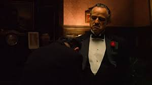

About Vito Corleone
He is an awesome character for the integrity that he had and for the famous quote, from where it all started 'I'm gonna make him an offer he can't refuse.'
Don Vito Corleone being himself
Don Vito Corleone Traits
- He is Calculated
- He is Resilient
- He is Soft-Spoken
- He is a Good Father
Don Vito's Allies
Don has the most loyal and trustful allies.The closest is one of his sons, Michael Corleone,who will take his place in the future.Click on the links below to find more about them: